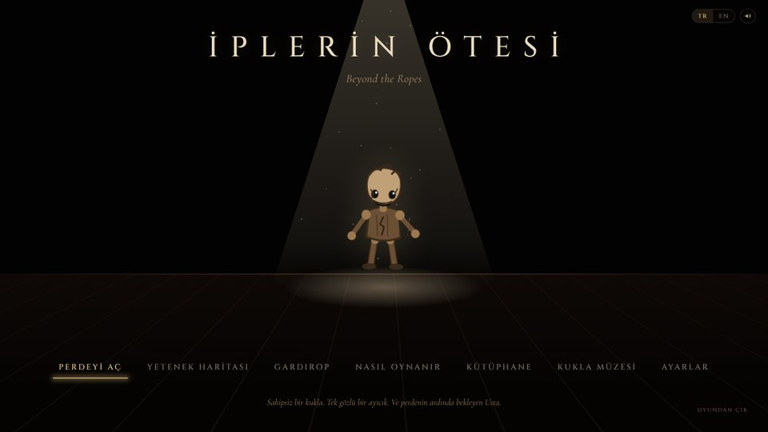

Muhammet Ali Çakır
Yönetim Bilişim Sistemleri Öğrencisi
İzmir Bakırçay Üniversitesi'nde Yönetim Bilişim Sistemleri okuyorum. İş analizi ve veri analizi ile ilgileniyorum; hedefim proje yöneticisi olmak. Yapay zekâ araçlarıyla günlük işler için asistanlar, oyunlar ve uygulamalar geliştiriyorum.
CV İndir İletişime GeçEmlak ve araç alım satımı için bir ilan sitesinin arayüzü.
Kişinin çevrimiçi hesaplarının ve verilerinin geleceğini planlamaya yönelik bir dijital miras uygulaması. Geliştiren ekibin liderliğini yaptım.
Küçük bir ekiple geliştirdiğim, hikâye odaklı bir PC oyunu. Oyun hâlâ geliştirme aşamasında.
